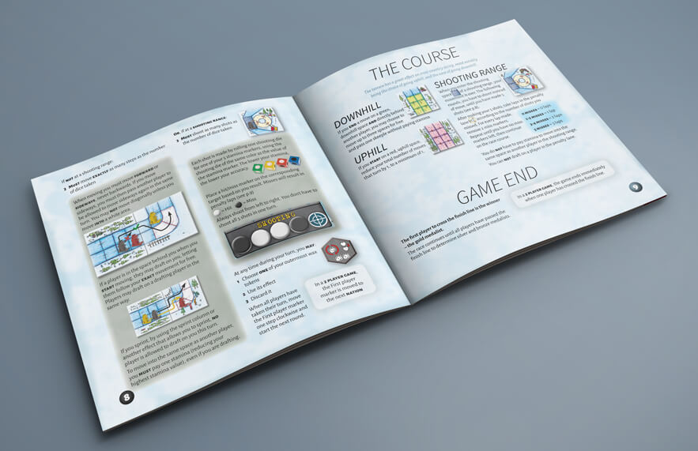

In the board game Ski Tour: Biathlon, the players participate in a biathlon, copeting for who can cross the finish line first. The rulebook was designed and tested as part of a bachelor thesis. When designing the rulebook, the players experience and ease of learning was the main focus, as we believe it should always be in this type of project.
For this rulebook, writing the rules was a big part of the project. We made sure to write the rules in a way that both made them easy to understand, and easy to layout around.
Working with both the text and the layout on the same project means you have more control, and can make sure they work together seamlessly.
The rules are introduced in the order of play, and presented in lists to make them easier to follow and look up during play.
Examples are used to make it easy for players to make sure they understand the introduced rules. To support the rule text, clarify concepts and make examples easier to understand, pictures are also widely used throughout the rulebook.
An icon reference, as well as a glossary with page references, is placed at the back of the rulebook for easy access.

The game is played in different phases, and to make each phase easier to look up in the rulebook they are color coded.